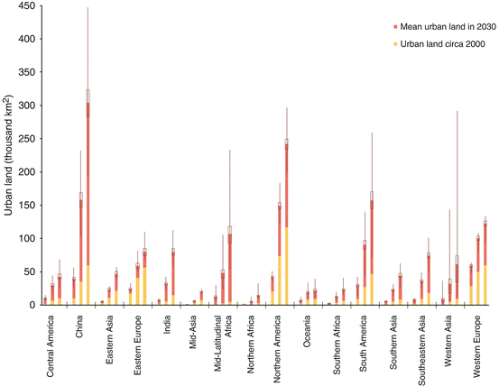
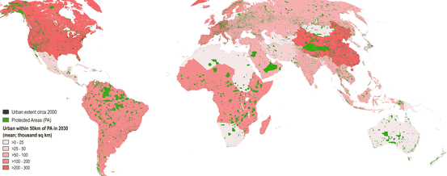
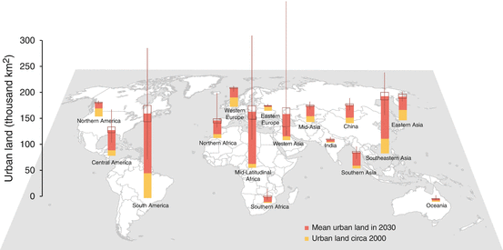
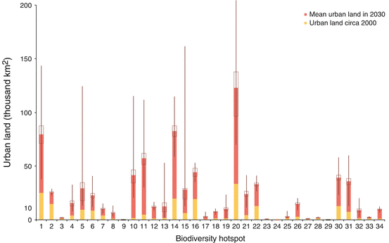

22.1 Impacts of Urbanization on Biodiversity
Urbanization impacts biodiversity both directly through physical expansion over land, and indirectly due to land use and human behaviors within urban areas. Physical expansion changes the composition of the landscape, and can eliminate organisms outright, or may alter or eliminate the conditions within a habitat that a species requires to survive. Urban expansion has the effect of decreasing, fragmenting, and isolating natural patches by altering the size, shape, and interconnectivity of the natural landscape (Ricketts 2001; Alberti 2005). In addition to physical expansion, human activity within cities can have a myriad of cascading effects that have impacts on biodiversity, including changes in biogeochemistry (Vitousek et al. 1997; Grimm et al. 2008), local temperature (Arnfield 2003; Voogt and Oke 2003), climate change (Kalnay and Cai 2003; Sanchez-Rodriguez et al. 2005; Wilby and Perry 2006) (Chap. 25), and hydrologic systems (Walsh 2000; Booth et al. 2004). Consequences for biodiversity and ecosystem services are difficult to generalize and depend on the taxonomic groups in question, spatial scale of analysis, and intensity of urbanization, among other factors (McKinney 2008); for example, in some urbanizing areas, local species richness may increase (albeit usually at the cost of native species) while in others it may decrease (McKinney 2002, 2006; Grimm et al. 2008) (see also Chap. 10).
Ultimately, studies attempting a detailed categorization of the impacts of current and projected urbanization on biodiversity and ecosystem services are important in further exploring, investigating, and testing the trends. A large body of work has been amassed on trends and projections of the impacts of urbanization on biodiversity and ecosystem services over time at the local scale. The local assessments included in this volume are a collection of several local studies from around the world. Local scale studies can provide useful insights; due to their limited geographical scope, they are often able to draw on rich databases concerning biodiversity (such as a detailed species records) and high-resolution data on land-use change over time. However, because of disparate approaches in methodologies and indicators, it is often difficult to merge data or results to draw aggregated conclusions. For the purpose of this chapter, we focus on scales of regional and global studies. Chapter 10 provides a deeper examination of urban impacts on biodiversity and ecosystems at the city scale. Chapter 3 provides an outlook of current global conditions in regards to how urbanization affects biodiversity conservation through impacts on global ecoregions, rare species and protected areas. In addition, Chap. 12 discusses the phenomenon of shrinking cities and its implications for biodiversity and ecosystem services. While Chap. 21 examines global projections of future urbanization, covering the population, economic and physical extent perspectives, this chapter examines research that specifically addresses impacts of forecasted urbanization on biodiversity and ecosystem services.
22.2 Impacts of Forecasted Urbanization on Biodiversity
22.2.1 Global Trends
Future urban population will increasingly reside in tropical areas (Fig. 3.6). According to the UN predictions, by 2050 there will be particularly noticeable increases in urban population in tropical moist forests, deserts and tropical grasslands. In addition, in terms of urban population per habitat area, there will be significant increases in impact in mangroves, flooded grasslands, and temperate broadleaf forests. Also worth noting are impacts to tropical conifer forests, a unique habitat type found only in a relatively small area globally. In contrast to the population dimension of global urbanization, until recently, there was little or no understanding of how urban areas grew in the past and how they will continue to grow into the future (Chap. 21). Addressing this gap in knowledge, a number of studies were recently published on global urbanization trends and their impacts on biodiversity and ecosystems services (Table 22.1).
Table 22.1
Comparison of global urban expansion studies based on data sources, methodology, impacts on biodiversity, and treatment of uncertainty
Study | Initial urban extent | Urban expansion: Drivers (Horizon) | Spatially-explicit? | Biodiversity hotspots | Protected areas | Biomes/ecoregions | AZE sites | Uncertainty |
|---|---|---|---|---|---|---|---|---|
McDonald et al. (2008) | GRUMP (urban extent and settlements data) | UN urban population forecasts (2030) | Crude | No | Yes | Yes | Yes | Scenario-based (baseline, compact, dispersed urban growth) |
McDonald et al. (2009) | As in McDonald et al. (2008) | As in McDonald et al. (2008) | As in McDonald et al. (2008) | No | Yes | No | No | As in McDonald et al. (2008) |
Nelson et al. (2010) | GLC2000 and GRUMP urban extent | UN urban population forecasts and slope (2015) | Yes (GEOMOD; 5 km at equator) | No | No | Yes | No | Scenario-based (country vs regional) |
Seto et al. (2011) | MODIS v4, GRUMP urban extent, GLC2000a
| Pop, economy, institutional and physical factors (2030) | Crude – regional | No | Yesb
| No | No | Scenario-based (IPCC AR4 scenarios) |
Seto et al. (2012a) | MODIS v5 | Pop, economy, and physical factors (2030) | Yes (URBANMOD – descendant of GEOMOD; 5 km equal area) | Yes | No | No | Yes | Locational probability to become urban (Monte Carlo simulations) based on various sources |
Güneralp and Seto (2013) | MODIS v5 | As in Seto et al. (2012a) | As in Seto et al. (2012a) | Yes | Yes | No | No | Probability of urban expansion (Monte Carlo simulations) based on various sources |
Since urban and cropland effects are aggregated, Nelson et al. (2010) do not explore the impacts on biodiversity and ecosystem services due solely to urban expansion. However, they do specify different projections across scenarios for the following ecosystem services: provision of crops (in mass and caloric content), water availability, and carbon storage in biomass. These are fed in to the Integrated Valuation of Ecosystem Services and Tradeoffs (InVEST) models (Tallis et al. 2010) to calculate how changes in land cover and land use will affect the global provision of crops, water availability, carbon storage in biomass (a climate regulation service), and habitat for species. Changes in undeveloped land extent (non-urban and non-cropland cover) serve as a proxy for species habitat and impacts on biodiversity, as it is characterized in the study that undeveloped land is more likely to provide species habitat than other land uses. The study uses ecoregion status (Olson et al. 2001) and describes threats to these areas based on predicted conversions of undeveloped land area. Olson et al. (2001) define an ecoregion as a relatively large area “containing a distinct assemblage of natural communities and species, with boundaries that approximate the original extent of natural communities prior to major land-use change”. Critical and endangered ecoregions are predicted to retain little natural habitat, the remainder of which is highly fragmented and has highly uncertain species persistence. Those ecoregions classified as vulnerable and relatively stable are forecasted to experience fewer disturbances. According to their scenario analysis, from 2000 to 2015, between 1.2 and 1.6 million km2 of undeveloped land in critical/endangered ecoregions is forecasted to become urban or cropland.
In their probabilistic analysis, Seto et al. (2012a) used the Alliance for Zero Extinction (AZE) dataset (Ricketts et al. 2005) to analyze the direct impact of urban expansion on highly threatened species that are confined to small areas. More than a quarter of all species in the AZE dataset will be affected by urban expansion with some probability by 2030. Africa and Europe are expected to have the highest percentages of AZE species to be affected by urban expansion: 30 and 33 %, respectively. However, it is the Americas that will have the largest number of species affected by urban expansion: 134 species, representing one-quarter of all AZE species in the region. On the other hand, in their deterministic analysis, McDonald et al. (2008) estimated that about 3 % of species in the AZE dataset will be adversely affected by urban growth by 2030; these species are mostly located along coastal areas and islands where endemism tends to be particularly high (Ricketts et al. 2005).
In the most recent publication on global forecasts of urban expansion and corresponding impacts on biodiversity, Güneralp and Seto (2013) quantify the urban extent in biodiversity hotspots and IUCN-designated protected areas (PAs) across the world by geographical region (Table A.1 in Chap. 21). The biodiversity hotspots, one of several conservation prioritization concepts (Brooks et al. 2006), are defined as regions with many endemic species facing exceptional habitat loss and degradation (Myers et al. 2000). Güneralp and Seto (2013) first quantify the amount of urban land in PAs and in three concentric buffer zones around PAs by region, around year 2000 and forecasted to year 2030. Similarly, they also quantify the distribution of urban land across biodiversity hotspots by region as well as by biodiversity hotspot.
By 2030, the urban lands near PAs are predicted to increase substantially in almost all the regions (Figs. 22.1 and 22.2). Most notably, China will most likely surpass Northern America and Western Europe in urban land within 25 km and 50 km of their respective PAs. China’s urban land within 25 km and 50 km distance of its PAs increase, respectively, to 160,000 ± 50,000 km2 and 300,000 ± 93,000 km2. These changes correspond to an increase of 4.5 ± 1.5 times in 30 years. The largest proportional change, however, will likely be in Mid-Latitudinal Africa; in that region, urban land near PAs increase 20 ± 5 times by 2030. In contrast, the rate of increase is relatively small in Northern America, South America, and Western Europe.

Fig. 22.1
Urban extent, within a distance of, from left to right, 10, 25, and 50 km of PAs by geographic region circa 2000 and as forecasted in 2030 (Modified from Güneralp and Seto 2013, p. 5. Published with kind permission of © Environmental Research Letters 2013. All rights reserved)

Fig. 22.2
Mean of forecasted urban extent within 50 km of PAs by geographic region in 2030. Urban extent circa 2000 and PAs are also shown (Modified from Güneralp and Seto 2013, p. 6. Published with kind permission of © Environmental Research Letters 2013. All rights reserved)
Across the world, between 2000 and 2030, total urban land in biodiversity hotspots is expected to increase 4 ± 0.8 times to 787,000 ± 160,000 km2 –the average is about the same as the land area of Turkey (Güneralp and Seto 2013). Correspondingly, percentage of urban land located in biodiversity hotspots is expected to increase to 34 % ( ± 2 %) in 2030 from 31 % circa 2000. By 2030, the largest increase in the amount of urban land in biodiversity hotspots is expected to be in South America (an increase by more than 100,000 ± 25,000 km2) (Fig. 22.3). This corresponds to nearly a 3.5 ± 0.5 fold increase in urban land in the region’s biodiversity hotspots. The largest proportional increase (about 14 ± 3 fold) is forecasted to be in Mid-Latitudinal Africa.

Fig. 22.3
Urban extent in biodiversity hotspots by geographic region circa 2000 and as forecasted in 2030 (Modified from Güneralp and Seto 2013, p. 6. Published with kind permission of © Environmental Research Letters 2013. All rights reserved)
Of the 34 biodiversity hotspots (Mittermeier et al. 2004; Myers et al. 2000), seven contain more than 10,000 km2 of urban land circa 2000 (Fig. 22.4). Of the seven, five are located in Asia (four wholly, one, the Mediterranean, in part); the remaining two are located in America and the Mediterranean along the coasts of Southern Europe and Northern Africa. The Mediterranean hotspot contains the most urban land, spread across three continents with different geographic, cultural, social, and economic characteristics. In a hotspot such as the Mediterranean that is already diminished and severely fragmented, even relatively modest decreases in habitat can cause the pressure on rare species to rise disproportionately (Tilman et al. 1994). The Mediterranean Basin may become the only hotspot containing more than 100,000 km2 (123,000 ± 37,000 km2) of urban land in 2030 (Fig. 22.4). Almost half of this expansion is predicted to occur in Western Asia and about a third in North Africa.

Fig. 22.4
Urban extent in biodiversity hotspots circa 2000 and as forecasted in 2030. 1 Atlantic Forest, 2 California Floristic Province, 3 Cape Floristic Region, 4 Caribbean Islands, 5 Caucasus, 6 Cerrado, 7 Chilean Winter Rainfall and Valdivian Forests, 8 Coastal Forests of Eastern Africa, 9 East Melanesian Islands, 10 Eastern Afromontane, 11 Guinean Forests of West Africa, 12 Himalaya, 13 Horn of Africa, 14 Indo-Burma, 15 Irano-Anatolian, 16 Japan, 17 Madagascar and the Indian Ocean Islands, 18 Madrean Pine-Oak Woodlands, 19 Maputaland-Pondoland-Albany, 20 Mediterranean Basin, 21 Mesoamerica, 22 Mountains of Central Asia, 23 Mountains of Southwest China, 24 New Caledonia, 25 New Zealand, 26 Philippines, 27 Polynesia-Micronesia, 28 Southwest Australia, 29 Succulent Karoo, 30 Sundaland, 31 Tropical Andes, 32 Tumbes-Choco-Magdalena, 33 Wallacea, 34 Western Ghats and Sri Lanka (Modified from Güneralp and Seto 2013, Figure S4, p. 6 of supplementary data. Published with kind permission of © Environmental Research Letters 2013. All rights reserved)
The highest rates of increase – over ten times – in urban land cover are forecasted to take place in four biodiversity hotpots that were relatively undisturbed by urban land change at the turn of this century: Eastern Afromontane, Guinean Forests of West Africa, Western Ghats and Sri Lanka, and Madagascar and the Indian Ocean Islands. Nevertheless, these high rates imply that some of those few hotspots that remained relatively undisturbed by the turn of this century will be increasingly encroached upon by urban expansion during its first three decades.
The analysis in Güneralp and Seto (2013) complements the account of locational probability of urban expansion forecasts in biodiversity hotspots of Seto et al. (2012a). These two studies quantify the forecasted urban land expansion using a land change model; hence they extend and complement two previous studies on urbanization and biodiversity conservation (McDonald et al. 2008, 2009). These two studies report rough projections of aggregate urban land expansion based solely on forecasted urban population growth and focus on different aspects of the proximity between urban land and PAs. In particular, McDonald et al. (2008) estimate that 25 % of the world’s PAs will be within 15 km of a city of at least 50,000 people by 2030. As a whole, these studies suggest that we need to find ways of coexistence between urban areas and PAs at such close proximities. The findings from Güneralp and Seto (2013) are conservative because some PAs are below the spatial resolution of their analysis (5 km). This leads to some underestimation of urban expansion in and around these areas. This is most problematic for regions in North America, Europe, and China where there are extensive networks of PAs. Most of those PAs that are below the spatial resolution of their analysis are in IUCN categories V and VI, some of which are small parks closer to cities. In addition, contrary to the conservative assumption in Güneralp and Seto (2013) of perfect enforcement of the formal regulations that do not permit urban expansion within PAs, the urban areas within PAs may very well expand at least in some parts of the world.
How urbanization will affect PAs will largely depend on the effectiveness of land use, conservation, and urbanization policies. Effective governance of land near PAs for preservation of ecosystem functioning and conservation of biodiversity can be challenging even for developed countries (Wade and Theobald 2010) (Chap. 27). This may be due to various political and cultural reasons, including fragmented jurisdictions of several bodies (Shafer 1999) and the lack of coordination between agencies responsible for governing PAs and the actors who govern the lands around PAs (Davis and Hansen 2011) (Chap. 27).
The hotspots in South and Central America as well as in Southeast Asia will experience both high rates and high amounts of urban expansion by 2030. The amount of urban land within hotspots will also increase in China, but will be relatively less than urban expansion elsewhere in the country. Some of the few hotspots that remained relatively undisturbed by the turn of this century will also be increasingly encroached upon by urban expansion –especially in the islands of Oceania and the Indian Ocean– during the first three decades of this century.
Urban expansion will also impact freshwater availability and, consequently, biodiversity (see Chap. 3 for current trends). A detailed paper modeled how population growth and climate change might affect water availability for all cities in developing countries with greater than 100,000 people (McDonald et al. 2011). These cities had 1.2 billion residents in 2000 (60 % of the urban population of developing countries). Modeled output suggests that currently 150 million people live in cities with perennial water shortage, defined as having less than 100 l/person/day of sustainable surface and groundwater flow within their urban extent. By 2050, this number is forecasted to increase to almost a billion people due to demographic growth. Climate change will cause water shortage for an additional 100 million urbanites. Cities in certain regions will struggle to find enough water for the needs of their residents, and will need significant investment if they are to secure adequate water supplies and safeguard functioning freshwater ecosystems for future generations. Of particular conservation concern is the Western Ghats of India, which will have 81 million people with insufficient water by 2050, but also houses 293 fish species, 29 % of which are endemic to this ecoregion and found nowhere else in the world.
Regardless of whether cities are investing in infrastructure to increase water supply or trying to use existing supplies more wisely, it is clear that substantial financial resources will be required to address these management challenges in the future. One study estimated that from 2003 to 2025 necessary annual investments would exceed $180 billion per year (World Panel on Financing Water Infrastructure 2003). While plenty of possible solutions to water quantity and quality problems exist, including some that are relatively less harmful to the environment, they all take money and time to implement. For the more than a billion people in cities facing water delivery challenges, both are in short supply.
Collectively, the findings of these studies suggest the need for conservation policies that consider urban growth at both regional and global scales. The threat to biodiversity comes from direct land cover change and subsequent loss of habitat, but also from indirect factors such as increased colonization by introduced species as urban areas expand. In regions with high likelihood of becoming urban, certain management practices such as establishing biodiversity corridors will require coordinated efforts among administrative bodies within and among nations. Such corridors may take on additional significance considering the migration of species in response to shifts in their ranges with climate change (Loarie et al. 2009).
Notwithstanding the differences in terms of data and methods used across these global-level studies, there are some broad agreements on the rates and magnitudes of future urban expansion and where its direct impacts are likely to be the most prominent. Urban expansion will continue near PAs at least at the same pace as elsewhere—if not faster—across most of the world. This increases the need to generate conservation and regional planning solutions to safeguard the integrity of the ecosystem processes that more often than not extend beyond PA boundaries (Hansen and DeFries 2007; McDonald et al. 2009; Güneralp and Seto 2013).
22.2.2 Regional Perspectives
There is a significant body of knowledge on urban impacts on biodiversity and ecosystem services from around the world (see Chap. 3 for current trends); however, there is yet no well-developed understanding of how these impacts will evolve into the future except those that come from the regional breakdowns in some of the global studies (Sect. 22.2.1). While global-scale analyses and projections of the effects of urbanization on biodiversity and ecosystem services are valuable for giving breadth of perspective and thus inform on broad trends, studies that focus on particular regions may allow for additional depth and insight on those regions. However, such large regional and country-level studies are also sparse.
There have been several studies forecasting the impacts of urban and ex-urban expansion on wildlife and protected areas in the United States. The wildlife-urban interface (WUI) in the United States, estimated to be about 465,614 km2 in 2000, is likely to expand to over 500,000 km2, with the greatest expansion expected in the inter-mountain west states (Theobald and Romme 2007). Bierwagen et al. (2010) projected growth of housing and impervious surfaces in the U.S. out to 2100 according to the IPCC 4th Assessment scenarios. According to their scenario forecasts, housing development impacts nearly one-third of wetlands under all scenarios by 2050 and nearly half by 2100 for A2. They emphasize that unless appropriate land-use and conservation policies are put in place, the vulnerability of this ecosystem type to runoff, sedimentation, and habitat loss will be high. Finally, Hamilton et al. (2013) forecasted urban land use around the protected area network in the U.S. out to 2051. They too employed a scenario-based approach to capture the uncertainty in future land change patterns. They conclude that it is unlikely for the national policies to influence the land-use change patterns in the U.S. They highlight that effective management and planning of protected lands in the country will require understanding regional land-use dynamics.
Average biodiversity appears to decline in almost all 25 EU countries across all four scenarios (combinations of lean government versus ambitious government regulation; and globalization versus regionalization) in Verboom et al. (2007). The only exceptions are Germany, Latvia, Estonia, and Malta. While this is not exclusively due to urbanization, urbanization is expected to play a significant role together with increase in nitrogen deposition and disturbance in densely populated areas. According to these projections to 2030, it is unlikely that the EU will be able to fulfill its commitment to stop biodiversity loss in the near future. In another regional study focusing on Britain, two scenarios of urbanization (densification and sprawl) are examined to study the impacts of urbanization from 2006 to 2016 on ecosystem services of flood mitigation, carbon storage, and agricultural production (Eigenbrod et al. 2011). The scenario projections suggest that how ecosystem services will be impacted will largely depend upon the patterns of urbanization. While the mean change in peak (2 year return period) flows across British rivers is rather small under both scenarios, it is more than three times higher under the densification scenario. In terms of those affected by flood mitigation services, under the densification scenario, 1.7 million people would be living in areas within 1 km of rivers for which peak flows are projected to increase by at least 10 %, while 11,000 people would be impacted under the sprawl scenario. Calculations of carbon storage and agricultural production reveal that urbanization under the sprawl scenario will result in losses that are 3.5 times higher than urbanization under the densification scenario. Vimal et al. (2012) use a land change model to predict impacts of forecasted urban expansion across the French Mediterranean region. Over one third of the high-biodiversity sites in the region will potentially be directly impacted by urban expansion by 2030. Their study also confirms the differential vulnerability of coastal habitats to urban expansion, a recurring theme across the whole Mediterranean (Médail and Quézel 1997).
The published works in this section all come from developed regions of the world. However, it is the developing regions where the need for local to region level studies is especially acute because urbanization is progressing the fastest and more of the habitats are under threat in these regions. In general, local to region level studies may be more amenable to study the processes that govern various ecosystem services and interactions among them; detecting these processes is harder at larger scale or global studies that are generally designed to detect broader trends. Consequently, the resulting process-based understanding can inform urbanization strategies that are suitable to specific regional contexts.
22.3 Future Farming in Relation to Cities
Future urbanization will also have important effects on food systems. Urban expansion, coupled with unsustainable land management practices and climate change, will likely continue to lead to loss of agricultural land (Godfray et al. 2010). A recent estimate puts the amount of cropland loss due to urban expansion between 2000 and 2015 at about 400,000 km2 (Nelson et al. 2010). This estimate does not include pastures and rangeland. However, a more significant, indirect, impact of urbanization may be due to diet shifts among urbanizing populations towards more meat and dairy-based food products (Satterthwaite et al. 2010). These shifts in dietary preferences will undoubtedly increase the pressure on agricultural lands because more land is needed to produce meat and dairy-based foods than vegetable and grain-based diet.
With an appropriate mix of policies and technological improvements, it may be possible to feed the burgeoning world population and at the same time temper or halt agricultural expansion. These interventions include improving yield of underperforming lands, increasing cropping efficiency as well as shifting diets back to more vegetable and grain-based ones, and reducing waste (Foley et al. 2011). These strategies might double food production while greatly reducing the environmental impacts of agriculture. Nevertheless, loss of cropland to urban expansion coupled with increased demand for food from a growing and urbanizing population may increase the incentive for both extensification and intensification (Godfray et al. 2010).
There are several paradigms on the nature of food systems. These paradigms can be seen as plausible future scenarios regarding the evolving relationships between urbanization, food systems, ecosystem services and biodiversity in the twenty-first century. Chapter 26 provides an in-depth examination of these scenarios and further information on food security and ecosystem support in an urbanizing world.
22.4 Challenges and Future Research Directions
Most analyses on the implications of forecasted urbanization on biodiversity and ecosystem services have emerged in the past two decades, in particular in the past 5 years. A multitude of factors beyond those included in these forecasting studies may influence urban expansion (Seto et al. 2011). Furthermore, mapping physical expansion of urban areas is not sufficient to calculate the full range of effects of urbanization on biodiversity and ecosystem services (see Chap. 21 for a comprehensive treatment of global urbanization trends). There are many indirect effects of urbanization due to the resource demands of residential, commercial, and industrial activities in urban areas (Seto et al. 2012b). Additional insights will be needed to formulate land-use change models that better reflect the complexity, diversity, and intensity of human influence on land systems (Letourneau et al. 2012).
Alongside the challenges of understanding and describing patterns of land-use change and urbanization, there are also challenges in approaching topics of biodiversity and ecosystem services. Biodiversity and ecosystems services are flexible concepts; studies must be clear in how they define these concepts in their specific contexts and select indicators/proxies for them. For example, there are many conservation prioritization concepts based on various criteria on which there is no general consensus among the conservation community (Brooks et al. 2006). The broad nature of these concepts leaves an inevitable gap in baseline knowledge in the scientific community (such as the full range of species richness and extent across the world), and may hinder study at the global scale of the impacts of urbanization. Additional work strategies between and among scholars and practitioners may be required to expand this base and further advance biodiversity science (see Chap. 32 for further discussion on indicators for management of biodiversity and ecosystem services).
There is a need for urbanization strategies that consider conservation of biodiversity (Niemelä 1999; Puppim de Oliveira et al. 2011) (Chap. 27). This is especially so in the case of developing countries where most urban expansion near PAs and in biodiversity hotspots are expected. In these places, urbanization strategies have the potential to affect the form of urban expansion with significant consequences for biodiversity. There are two crucial aspects of these efforts: First is to ground the research on the relationship between urbanization and biodiversity on a firm theoretical foundation (see Chap. 33); the second is making findings from this research accessible and useful to those who can most benefit from them. These include citizens, community organizations, planners, and government representatives alike. This dissemination of information and connection of science to practitioners will be an important tool for formulating more robust urbanization strategies that specifically consider biodiversity.
References
Alberti, M. (2005). The effects of urban patterns on ecosystem function. International Regional Science Review, 28(2), 168–192.CrossRef
Arnfield, A. J. (2003). Two decades of urban climate research: A review of turbulence, exchanges of energy and water, and the urban heat island. International Journal of Climatology, 23(1), 1–26.CrossRef
Bierwagen, B. G., Theobald, D. M., Pyke, C. R., Choate, A., Groth, P., Thomas, J. V., & Morefield, P. (2010). National housing and impervious surface scenarios for integrated climate impact assessments. Proceedings of the National Academy of Sciences, 107(49), 20887–20892.CrossRef
Booth, D. B., Karr, J. R., Schauman, S., Konrad, C. P., Morley, S. A., Larson, M. G., & Burges, S. J. (2004). Reviving urban streams: Land use, hydrology, biology, and human behavior. Journal of the American Water Resources Association, 40(5), 1351–1364.CrossRef
Davis, C. R., & Hansen, A. J. (2011). Trajectories in land use change around U.S. National Parks and challenges and opportunities for management. Ecological Applications, 21(8), 3299–3316.CrossRef
Foley, J., Ramankutty, N., Brauman, K., Cassidy, E., Gerber, J., Johnston, M., Mueller, N., O’Connell, C., Ray, D., West, P., Balzer, C., Bennett, E., Carpenter, S., Hill, J., Monfreda, C., Polasky, S., Rockström, J., Sheehan, J., Siebert, S., Tilman, D., & Zaks, D. (2011). Solutions for a cultivated planet. Nature, 478, 337–342.PubMedCrossRef
Güneralp, B., & Seto, K. C. (2013). Futures of global urban expansion: Uncertainties and implications for biodiversity conservation. Environmental Research Letters, 8, 014025.CrossRef
Letourneau, A., Verburg, P. H., & Stehfest, E. (2012). A land-use systems approach to represent land-use dynamics at continental and global scales. Environmental Modelling and Software, 33, 61–79.CrossRef
McDonald, R. I., Kareiva, P., & Forman, R. T. T. (2008). The implications of current and future urbanization for global protected areas and biodiversity conservation. Biological Conservation, 141(6), 1695–1703.CrossRef
McDonald, R. I., Forman, R. T. T., Kareiva, P., Neugarten, R., Salzer, D., & Fisher, J. (2009). Urban effects, distance, and protected areas in an urbanizing world. Landscape and Urban Planning, 93(1), 63–75.CrossRef
McDonald, R. I., Green, P., Balk, D., Fekete, B. M., Revenga, C., Todd, M., & Montgomery, M. (2011). Urban growth, climate change, and freshwater availability. Proceedings of the National Academy of Sciences, 108(15), 6312–6317.CrossRef
McKinney, M. L. (2002). Urbanization, biodiversity, and conservation. BioScience, 52(10), 883–890.CrossRef
McKinney, M. L. (2006). Urbanization as a major cause of biotic homogenization. Biological Conservation, 127(3), 247–260.CrossRef
McKinney, M. L. (2008). Effects of urbanization on species richness: A review of plants and animals. Urban Ecosystems, 11(2), 161–176.CrossRef
Médail, F., & Quézel, P. (1997). Hot-spots analysis for conservation of plant biodiversity in the Mediterranean Basin. Annals of the Missouri Botanical Garden, 84(1), 112–127.CrossRef
Mittermeier, R. A., Robles-Gil, P., Hoffmann, M., Pilgrim, J. D., Brooks, T. B., Mittermeier, C. G., Lamoreux, J. L., & Fonseca, G. A. B. (2004). Hotspots revisited: Earth’s biologically richest and most endangered ecoregions. Mexico City: CEMEX. 390 pp.
Niemelä, J. (1999). Ecology and urban planning. Biodiversity and Conservation, 8(1), 119–131.CrossRef
Olson, D. M., Dinerstein, E., Wikramanayake, E. D., Burgess, N. D., Powell, G. V. N., Underwood, E. C., D’amico, J. A., Itoua, I., Strand, H. E., Morrison, J. C., Loucks, C. J., Allnutt, T. F., Ricketts, T. H., Kura, Y., Lamoreux, J. F., Wettengel, W. W., Hedao, P., & Kassem, K. R. (2001). Terrestrial ecoregions of the world: A new map of life on Earth. BioScience, 51(11), 933–938.CrossRef
Puppim de Oliveira, J. A., Balaban, O., Doll, C. N. H., Moreno-Peñaranda, R., Gasparatos, A., Iossifova, D., & Suwa, A. (2011). Cities and biodiversity: Perspectives and governance challenges for implementing the convention on biological diversity (CBD) at the city level. Biological Conservation, 144(5), 1302–1313.CrossRef
Ricketts, T. H., Dinerstein, E., Boucher, T., Brooks, T. M., Butchart, S. H. M., Hoffmann, M., Lamoreux, J. F., Morrison, J., Parr, M., Pilgrim, J. D., Rodrigues, A. S. L., Sechrest, W., Wallace, G. E., Berlin, K., Bielby, J., Burgess, N. D., Church, D. R., Cox, N., Knox, D., Loucks, C., Luck, G. W., Master, L. L., Moore, R., Naidoo, R., Ridgely, R., Schatz, G. E., Shire, G., Strand, H., Wettengel, W., & Wikramanayake, E. (2005). Pinpointing and preventing imminent extinctions. Proceedings of the National Academy of Sciences of the United States of America, 102(51), 18497–18501.PubMedCrossRef
Sanchez-Rodriguez, R., Seto, K., Simon, D., Solecki, W., Kraas, F., & Laumann, G. (2005). Science plan: Urbanization and global environmental change. Bonn: International Human Dimensions Program on Global Environmental Change.
Satterthwaite, D., McGranahan, G., & Tacoli, C. (2010). Urbanization and its implications for food and farming. Philosophical Transactions of the Royal Society B: Biological Sciences, 365(1554), 2809–2820.CrossRef
Seto, K. C., Reenberg, A., Boone, C. G., Fragkias, M., Haase, D., Langanke, T., Marcotullio, P., Munroe, D. K., Olah, B., & Simon, D. (2012b). Urban land teleconnections and sustainability. Proceedings of the National Academy of Sciences, 109(20), 7687–7692.CrossRef
Tallis, H. T., Ricketts, T., Nelson, E., Ennaanay, D., Wolny, S., et al. (2010). InVEST 1.004 beta user’s guide. Stanford: The Natural Capital Project, from http://invest.ecoinformatics.org/
Theobald, D. M., & Romme, W. H. (2007). Expansion of the US wildland-urban interface. Landscape and Urban Planning, 83(4), 340–354.CrossRef
Tilman, D., May, R. M., Lehman, C. L., & Nowak, M. A. (1994). Habitat destruction and the extinction debt. Nature, 371(6492), 65–66.CrossRef
Verboom, J., Alkemade, R., Klijn, J., Metzger, M. J., & Reijnen, R. (2007). Combining biodiversity modeling with political and economic development scenarios for 25 EU countries. Ecological Economics, 62(2), 267–276.CrossRef
Vimal, R., Geniaux, G., Pluvinet, P., Napoleone, C., & Lepart, J. (2012). Detecting threatened biodiversity by urbanization at regional and local scales using an urban sprawl simulation approach: Application on the French Mediterranean region. Landscape and Urban Planning, 104(3–4), 343–355.CrossRef
Vitousek, P. M., Mooney, H. A., Lubchenco, J., & Melillo, J. M. (1997). Human domination of Earth’s ecosystems. Science, 277(5325), 494–499.CrossRef
Voogt, J. A., & Oke, T. R. (2003). Thermal remote sensing of urban climates. Remote Sensing of Environment, 86(3), 370–384.CrossRef
Walsh, C. J. (2000). Urban impacts on the ecology of receiving waters: A framework for assessment, conservation and restoration. Hydrobiologia, 431(2–3), 107–114.CrossRef
Wilby, R. L., & Perry, G. L. W. (2006). Climate change, biodiversity and the urban environment: A critical review based on London, UK. Progress in Physical Geography, 30(1), 73–98.CrossRef
World Panel on Financing Water Infrastructure. (2003). Financing water for all. Marseilles: World Water Council.